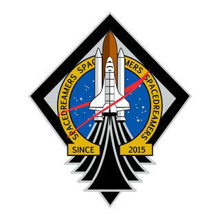
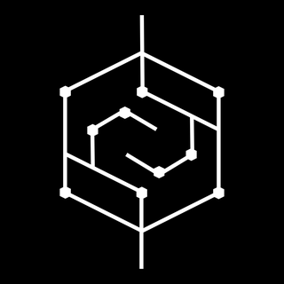
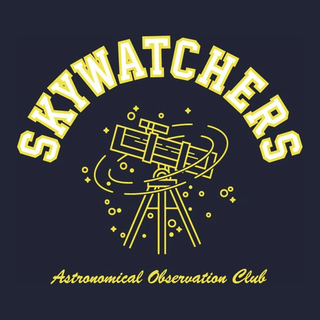
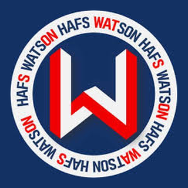

Captain, aerospace engineering
Space Dreamers
Captain of the school's aerospace engineering club, active since 2015. Leads club projects and the club's aerospace education outreach.
Clubs
School clubs led, founded, and joined.

Captain, aerospace engineering
Captain of the school's aerospace engineering club, active since 2015. Leads club projects and the club's aerospace education outreach.

Founder, computer science
Founded the school's computer science club independently. The club runs HAFSwiki, the school wiki.

Vice captain, astronomy
Vice captain of the school's astronomical observation club.

Member, aerospace
Member of the HAFS aerospace club.
Member, biomedical science
Member of the school's biomedical science club.